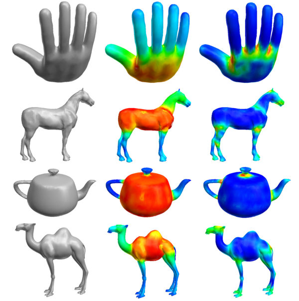
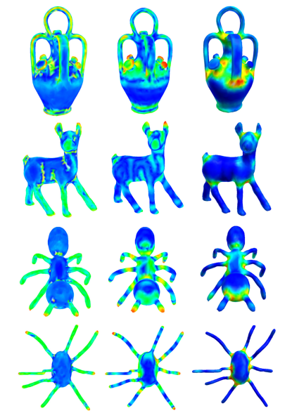
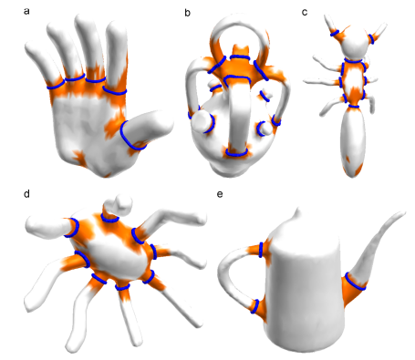

Junction-aware shape descriptor for 3D articulated models using local shape-radius variation
aSchool of Software, Tsinghua University, Beijing, 100084, China
bKey Laboratory for Information System Security, Ministry of Education of China
cTsinghua National Laboratory for Information Science and Technology

{kind=link}
Figure 1: Visualizing the SDF value and our junction-aware shape descriptor. Rows are hand, horse, teapot and camel. The leftmost column shows the original models, the middle one visualizes the SDF value, and the rightmost one displays our junction-aware shape descriptor. The high values are displayed by warmer colors (red and yellow), while the low values are displayed by cooler colors (green and blue). (For interpretation of the references to color in this figure caption, the reader is referred to the web version of this article.)
Abstract:
An articulated model is composed of a set of rigid parts connected by some flexible junctions. The junction, as a critical local feature, provides valuable information for many 3D semantic analysis applications such as feature recognition, semantic segmentation, shape matching, motion tracking and functional prediction. However, efficient description and detection of junctions still remain a research challenge due to high complexity of 3D articulated deformation. This paper presents a new junction-aware shape descriptor for a 3D articulated model defined by a closed mesh surface. The core idea is to exploit the local shape-radius variation for encoding junction information on the shape boundary surface, where the shape-radius at each point on the surface is the radius of corresponding medial balls within the shape. The presented descriptor is typically computed using a center-surround filter operator, which calculates the Gaussian-weighted average of shape-radius in the neighborhood of each point on the surface. Our descriptor is robust to articulation and can reflect the junction feature well without any explicit shape decomposition or prior skeleton extraction procedure. The experimental results and several potential applications are proposed for demonstrating the effectiveness of our method.
Links:
Paper(PDF) [0.70MB]
Results:

{kind=link}
Figure 2: Comparing our junction-aware shape descriptor with mean curvature and mesh saliency. Rows are vase, deer, ant and octopus. The leftmost column shows the values of mean curvature, the middle one visualizes the values of mesh saliency, and the rightmost one displays our junction-aware shape descriptor.
{kind=link}
Figure 3: Approximating the handle loops (blue curves). (a) Hand. (b) Vase. (c) Ant. (d) Octopus. (e) Teapot. (For interpretation of the references to color in this figure caption, the reader is referred to the web version of this article.).
Acknowledgements:
This research is supported by the National Science Foundation of China (61272229, 61003095), the National Technological Support Program for the 12th-Five-Year Plan of China (2012BAJ03B07). The second author is also supported by Chinese 863 Program (2012AA040902) and Chinese 973 Program (2010CB328001).
Citation
[Bibtex] Jinlong Feng, Yu-Shen Liu, Lianjie Gong. Junction-aware shape descriptor for 3D articulated models using local shape-radius variation. Signal Processing, 2015, 112: 4-16. (SCI, 2013 Impact factor: 2.238).
Contact:
Dr. Yu-Shen Liu, Email address: liuyushen@tsinghua.edu.cn.
Jinlong Feng, Email address: therealoneisneo@gmail.com.
Jinlong Feng, Email address: therealoneisneo@gmail.com.